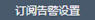
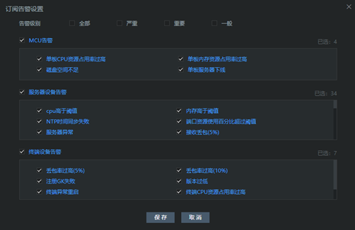
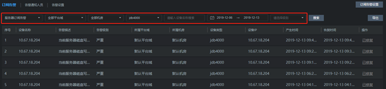
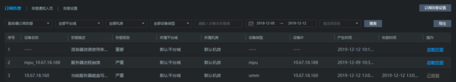

在平台监控>告警通知页面，点击订阅告警，在此页面依次设置订阅告警信息，设置完成后，如果设备出现异常，告警信息会显示在页面上。
具体操作步骤如下：
1. 点击，在弹出的订阅告警设置框里，勾选告警级别以及告警项；

2. 点击【保存】。
搜索
设置订阅告警信息，点击【搜索】即可出现服务器告警信息列表，包含设备名称、告警描述信息、告警级别、型号、设备IP、告警产生时间及恢复时间等信息。

点击【导出】可将服务器告警信息以Excel文件形式保存至本地。
忽略告警
若界面告警信息列表有忽略告警，需手动恢复告警信息。服务器告警，问题处理解决后，系统无法自动修复的，可以通过选择忽略告警解除，但不影响下次告警的触发。
